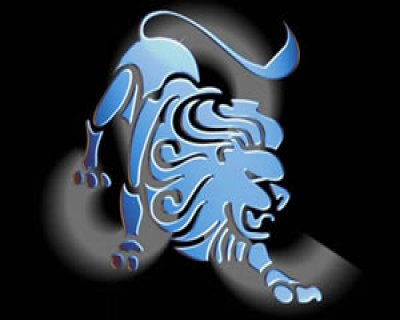

(23 Temmuz - 22 Ağustos)
GRUP:Ateş, erkek, pozitif, sabit
YÖNETİCİ GEZEGEN:Güneş
RENK:Koyu sarı, altın rengi, turuncu, kehribar
UĞRLU TAŞ:Sarı safir
ŞANSLI SAYI:1-4
ŞANSLI GÜN:Pazar
KARŞIT BURÇ:Kova
ŞEHİRLER:Chicogo, Bombay, Philedelphia, Roma, Şam, Los Angeles, Prag
METAL:Altın
ÇİÇEKLER:Sarı krizantim, ayçiçeği, kasımpatı
AĞAÇLAR:Portakal, limon, defne, hurma, ceviz, badem
Aslan kraldır, önderdir. Başkalarının yaşantılarını da onlar adına düzenlemek isterler. Her şeye karışırlar, kibirlidirler. Bu nedenle onları tanımlayan sözcük 'Yönetirim' dir. Yaşam sahnesinde her zaman parlayarak, odak noktası olmak isterler. Organizasyon güçleri çok fazladır. İsteklerini başkalarına kabul ettirmek, onlar için yaşamlarının 'olmazsa olmaz' şartıdır. İyi zamanlarında etkileyici, güler yüzlü, başkalarına yardım etmeyi seven ve bunu kendine görev sayan Aslan'lar sevimli ve iyimser kişilerdir. Ona karşı hatalı davransanız bile, size olgun bir şekilde tepki verir. Fakat; Sabrı taştıktan sonra, dürüst ve mert, gerektiğinde sert bir şekilde tavır gösterir. Zor günlerinde şansları onlara her zaman yardım eder. Yönetici gezegenleri Güneş onları en karanlık günlerinde aydınlığa çıkarır. Eğitimsiz ve gelişmemiş Aslan tipleri çekilmez olurlar. Her konuda sahip olduklarından daha fazlası varmış gibi davranırlar.
Aslan burcunun tipik fiziksel özellikleri: Boyları genelde uzun ve kemikleri kalındır. Omuzlar geniş, kaslar gelişmiştir. Açık renk saçlı, pembe beyaz tenli, büyük ve yuvarlak başlıdır. Gözleri iyi görür. Kadınları saçlarını çok severler. Dış görünüşlerine çok önem vermeleri yüzünden, onları her an bakımlı görebilirsiniz. Yürüyüşleri farklıdır ve girdikleri yerlerde gözle hemen üstlerinde toplanır. Fiziksel çekiciliğinin farkında oluşu, onu daha gururlu ve ben merkezci yapar.